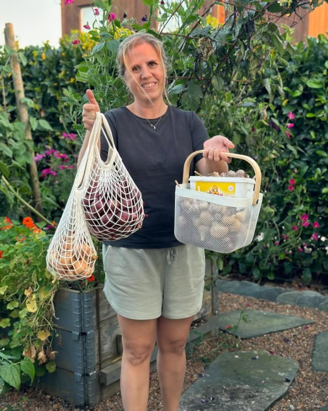
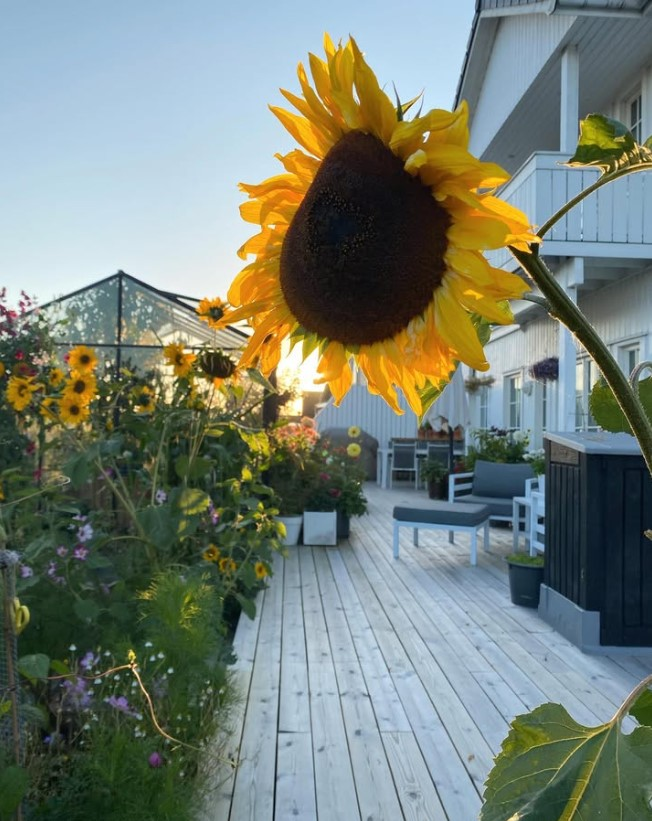
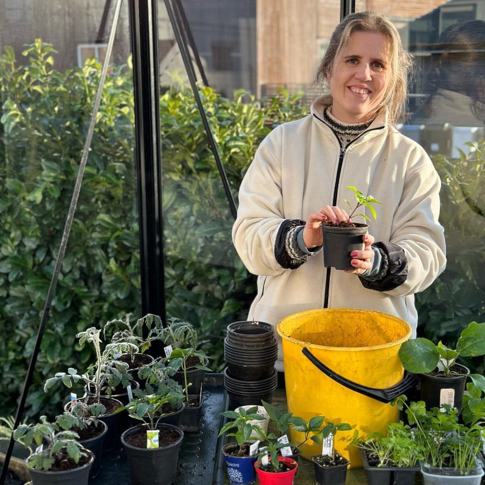
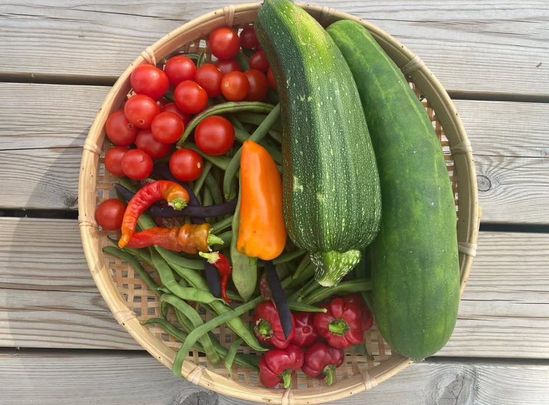
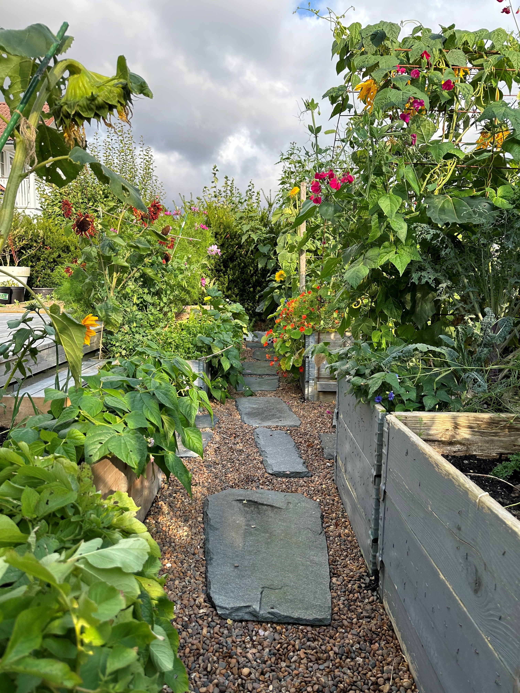
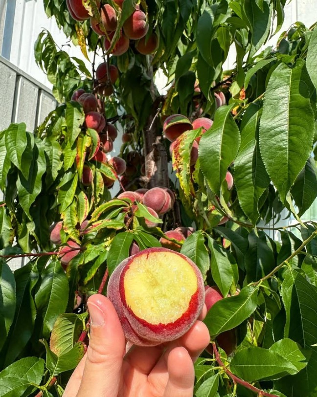
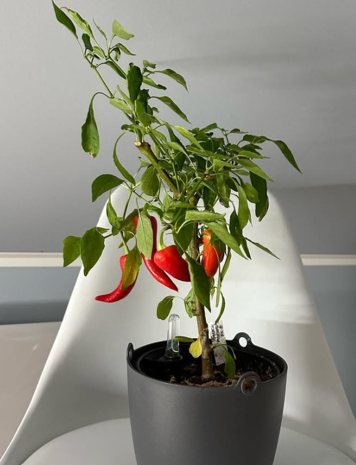
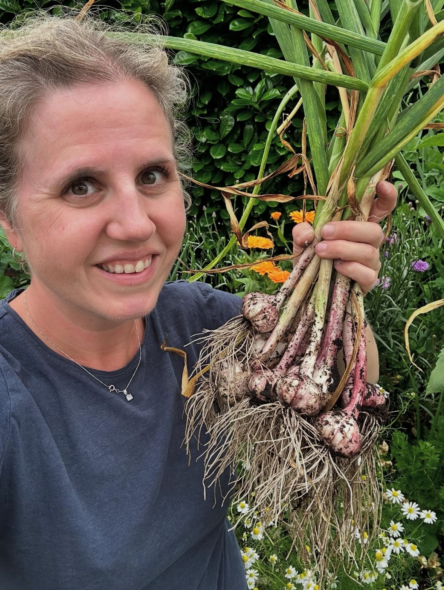

Om meg
Velkommen til mitt lille grønne hjørne!
Jeg heter Lene Aspen, er 42 år, og bor i Haugesund sammen med mann, to barn, hund og åtte høner. Jeg har likt å dyrke så lenge jeg kan huske. Det som startet med en pakke karse på barneskolen, utviklet seg via urter i krukker, og videre til å dyrke i egen hage som voksen. I dag dyrker jeg i enhver tilgjengelig mulighet – pallekarmer, bed, krukker og drivhus.
Til daglig jobber jeg innen IT og helse – en jobb jeg stortrives med. Kjøkkenhagen er derfor mitt landingssted på fritiden.

Gjennom sosiale medier har jeg funnet et godt miljø der jeg har lært mye og fått nye bekjentskaper. I dag bruker jeg sosiale medier, foredrag og kurs til å vise hvordan alle – uansett erfaring og plass – kan komme i gang med å dyrke sin egen mat.
For meg handler dyrking om mer enn avling – det handler om:
- tilhørighet
- mestringsfølelse
- tilstedeværelse
- en god dose prøving og feiling
Jeg tror på å dyrke det du vil, på den måten som passer deg – og å feile med visshet om at man gjorde et godt forsøk.
Velkommen inn i min hageverden! Håper du finner både inspirasjon og iver til å dyrke din egen kjøkkenhage.






